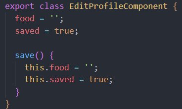
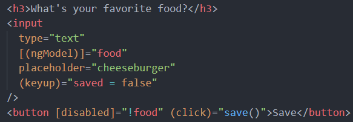

When a route is protected with canDeactivate, we provide logic (resolving
to a boolean) that allows a user to navigate away from the current route,
or not
In this example, we'd like to be able to
Visit the page and leave the page without making changes
Visit the page, edit our answer, save, and leave
Visit the page, start typing, try to leave before saving, and be
notified that we have unsaved changes
To do this, we first set up our component


In our app-routing.module.ts we provide the logic for navigating away from
the page